| [ Team LiB ] |
|
13.3 The General Pairing ProblemGiven a general multivariable process diagram, how do we select the pairings for a control structure that consists of multiple SISO loops? In the following sections, we use matrix vector notation, where y(s) is a vector of n outputs and u(s) is a vector of m inputs, 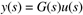 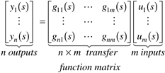 where each output can be represented by 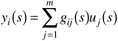 To form a MVSISO system, we must ask the following: Which output yi should be paired with which input uj to form an SISO control loop? Two Input–Two Output ProcessesLet us consider the relationship between yi and uj under a number of conditions. For simplicity, we will deal primarily with 2 x 2 (two input–two output) systems. The open-loop input-output relationships are
which is written in matrix form as
and we can think of the input output relationships as shown in Figure 13-7. Figure 13-7. Input-output block diagram for a two input–two output process.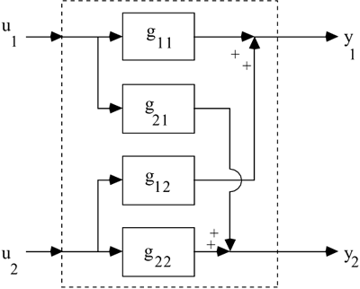 The corresponding feedback control system, if the pairings are u1-y1 and u2-y2, is shown in Figure 13-8. Figure 13-8. Feedback block diagram for a two input–two output process where output y1 is paired with input u1.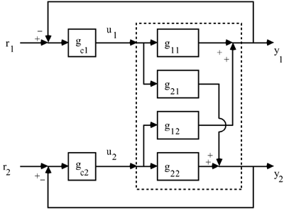 Input 1–Output 1 Dynamic BehaviorFor consistency in notation, we refer to loop 1 as the y1-u1 pairing and loop 2 as the y2-u2 pairing. We wish to consider how control loop 1 should be designed. We have focused on the use of input-output models for control system design. In the case of loop 1, we need to know how input 1 affects output 1. Now, consider how u1 affects y1 if (a) loop 2 is open and if (b) loop 2 is closed. (a) Loop 2 is open (loop 1 is also open). If the second input (u2) is constant, then the outputs depend only on the first input (u1), as shown in Figure 13-9. Figure 13-9. Block diagram with loop 2 open (loop 1 is open as well).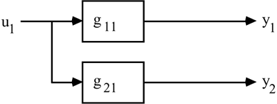 The input-output relationship is 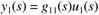 If we designed a SISO feedback control system for loop 1, we would use g11(s) as the process transfer function for control system design. (b) Loop 2 is closed. If the second loop (y2-u2) is closed, then the outputs depend on input 1 (u1), as shown in Figure 13-10. Notice that there is an additional effect of input 1 on input 2 owing to the action of controller 2. Input 1 affects output 2, which then changes input 2 through the second controller. This change in input 2 then has an additional effect on output 1; this effect can be positive or negative. Figure 13-10. Block diagram of input 1–output 1 relationship with loop 2 closed.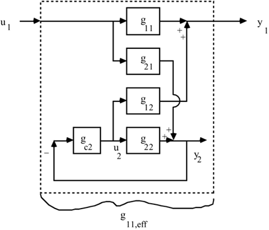 Thus, the relationship between u1(s) and y1(s) is no longer just g11(s). Indeed, we can derive the relationship in the fashion: 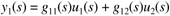 but (assuming no setpoint change in loop 2, r2 = 0), 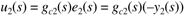 also 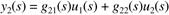 Combining Equations (13.7) and (13.8), 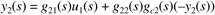 and solving for y2(s), 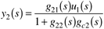 Substituting this into Equation (13.7), 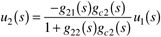 and substituting this result into Equation (13.6), we find 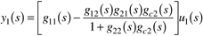 That is, y1(s) = g11,eff(s) u1(s), where 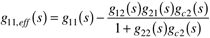 g11,eff(s) is the effective input-output relationship between u1 and y1, with loop 2 closed. This means that g11,eff(s) should be used as the process transfer function to design controller 1 if loop 2 is closed. Unless g12(s) or g21(s) = 0, if the second control loop is closed, then the first control loop must be designed differently than if the second control loop were open. Naturally, the relationship between u1 and y1 is a function of the controller gc2 when the second loop is closed. Example 13.1, continuedConsider the expected effect of the second loop in the blending example posed earlier. In Figure 13-11 we compare the response of ethanol concentration due to a change in whiskey flow rate, under two conditions: with the flow controller (loop 2) open (solid), and with the flow controller closed (dashed). Notice the tremendous amplification of the effect of the whiskey flow rate. Here, we rationalize the effect of the flow loop being closed. When the whiskey flow rate is increased, it causes the total blend flow rate to increase. The total blend flow-rate controller then cuts back on the dilution water flow rate, which causes the ethanol concentration to increase even more. The flow rate controller has caused the whiskey stream to have roughly four times the effect on the ethanol concentration, compared to when the flow control loop is open. Figure 13-11. Response of ethanol concentration to a step increase in whiskey flow rate; loop 2 open (solid curve) and loop 2 closed (dashed curve).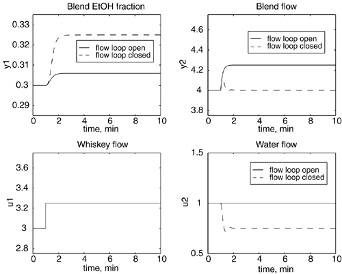 Steady-State Effective GainComment: What we would really like is a method to determine the relationship between u1 and y1 with loop 2 closed, without knowing gc2(s). We can easily determine this relationship for a limiting case, the steady state. For the steady state, we simply let s 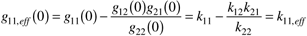 This can also be determined from the steady-state relationship
Assuming perfect control of y2, that is, y2 = 0, 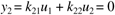 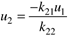 and we can then find the following relationships: 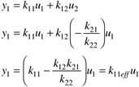 We now have a steady-state effective gain relationship between u1 and y1 with the loop between u2 and y2 closed. |
| [ Team LiB ] |
|
 0. Assuming integral action is used in the controller, we find that as
0. Assuming integral action is used in the controller, we find that as  . Also, from Equation (
. Also, from Equation (